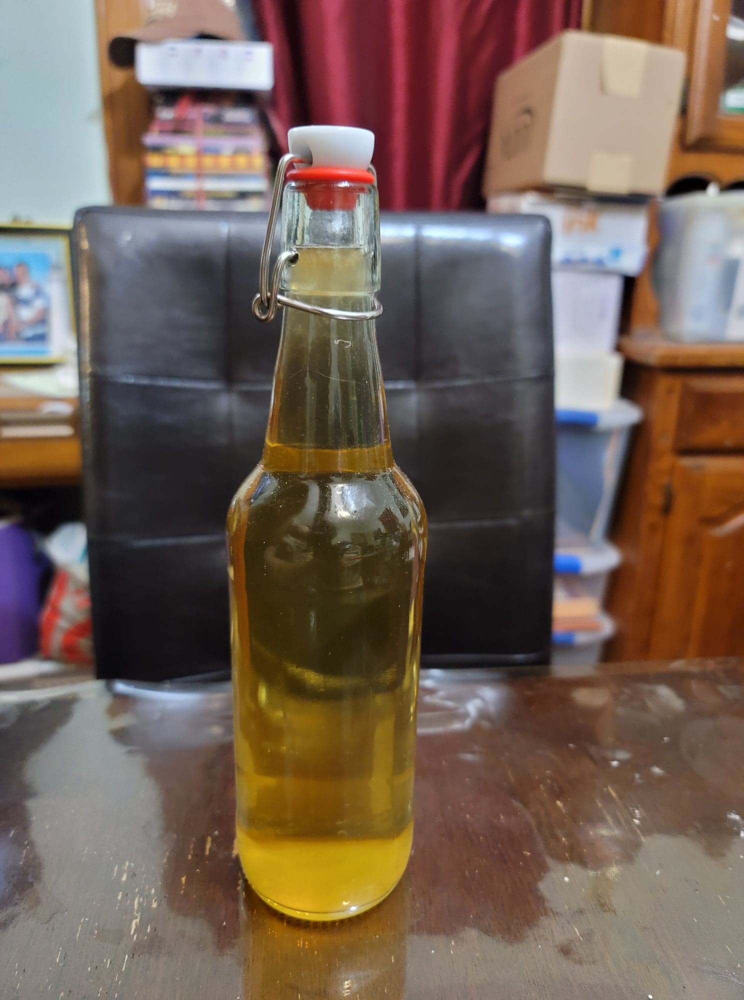

Kombucha Vinegar

Ingredients:
Instructions:
- Instead of straining the kombucha into flip-top bottles for a second fermentation, let the kombucha ferment in the same original container for about 6 months, or to your liking. When sour to your preference, decant to a separate container.